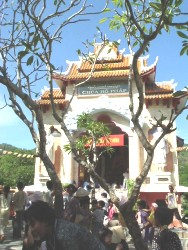
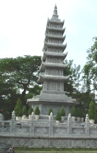
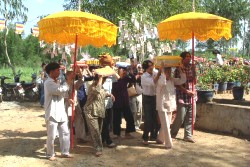

Nhật ký Hành hương - 2004
Bình Anson
-ooOoo-
1. Hành hương Ấn Độ
2. Hành hương Việt Nam
3. Hành hương Thái Lan
-ooOoo-
Phần 2
Hành hương Việt Nam
Thứ Ba, 09-11-2004: Đến phi trường Donmuang, Bangkok, vào sáng sớm. Thuê xe taxi về nhà, nghỉ ngơi. Sau đó, tôi đến một tiệm Cafe Internet gần chợ để soát mails. Sửa soạn hành lý để vào Việt Nam.
Thứ Tư, 10-11-2004: Rời phi trường Donmuang lúc 9:00 sáng, tôi đáp máy bay vào Việt Nam, đến phi trường Tân Sơn Nhất. Ra khỏi phi trường lúc 12:00 giờ trưa. Về đến nhà, gọi điện thoại thăm các Tăng Ni và thân hữu, sắp đặt chương trình tham dự các lễ Dâng Y Kathina.
Chúng tôi ra phố Huỳnh Thúc Kháng để đặt in, sao chép 100 đĩa CD Phật Học BuddhaSasana (version 4.10) và 10 bộ đĩa CD-MP3 do bác Phạm Kim Khánh đọc thu âm.
 Thứ Năm, 11-11-2004: Rời Sài
Gòn, lên xe đi Vĩnh Long. Cùng
đi có các bạn trong nhóm cựu sinh viên
Kỹ sư Hóa học ngày trước (nhóm K2H2). Đến chùa
Siêu Lý khoảng 10:00 giờ. Gặp được gia đình
một đạo hữu ở Tây Úc, về thăm nhà ở
Cần Thơ, và đến dự buổi lễ hôm nay. Phật tử
tham dự rất đông, kể cả các Phật tử từ Sài Gòn. Chúng tôi
đến chào Ngài trụ trì là Sư Giác Sơn
và phó trụ trì là Sư Giác Giới, đồng thời
cũng gặp các vị Tăng Ni khác, như quý Sư Thiện Trí, Pháp
Đăng, Tuệ Dũng, Tuệ Tàm, và quý Sư cô
Diệu Tịnh, Diệu Tâm (Sư cô Hiền). Gặp các chị Phật tử
đã từng sinh hoạt thường xuyên trên
các diễn đàn Phật giáo của mạng
PalTalk. Chúng tôi cúng dường một bộ đại y
mang về từ Perth, và gửi tặng các đĩa
CD Phật Học.
Thứ Năm, 11-11-2004: Rời Sài
Gòn, lên xe đi Vĩnh Long. Cùng
đi có các bạn trong nhóm cựu sinh viên
Kỹ sư Hóa học ngày trước (nhóm K2H2). Đến chùa
Siêu Lý khoảng 10:00 giờ. Gặp được gia đình
một đạo hữu ở Tây Úc, về thăm nhà ở
Cần Thơ, và đến dự buổi lễ hôm nay. Phật tử
tham dự rất đông, kể cả các Phật tử từ Sài Gòn. Chúng tôi
đến chào Ngài trụ trì là Sư Giác Sơn
và phó trụ trì là Sư Giác Giới, đồng thời
cũng gặp các vị Tăng Ni khác, như quý Sư Thiện Trí, Pháp
Đăng, Tuệ Dũng, Tuệ Tàm, và quý Sư cô
Diệu Tịnh, Diệu Tâm (Sư cô Hiền). Gặp các chị Phật tử
đã từng sinh hoạt thường xuyên trên
các diễn đàn Phật giáo của mạng
PalTalk. Chúng tôi cúng dường một bộ đại y
mang về từ Perth, và gửi tặng các đĩa
CD Phật Học.
Tiếp theo, chúng tôi đến viếng và lễ Phật tại chùa Viên Giác, thăm cô Tu nữ Thánh Trí cùng chư Tăng Ni tại chùa. Chùa cũng có một buổi lễ Dâng Y vào buổi trưa hôm đó.
Chúng tôi ăn cơm trưa tại một quán ăn trong thị xã Vĩnh Long. Sau đó, lên xe đi Trà Vinh, đến viếng thăm, lễ Phật và chụp hình chùa Hang (Kampongnigrodha Kampong Chrây) mà chúng tôi đã từng đến thăm năm 2003.
Trở về Vĩnh Long và nghỉ qua đêm tại khách sạn Cửu Long, bên bờ sông.
Thứ Sáu, 12-11-2004: Rời Vĩnh Long, qua cầu Mỹ Thuận, tiến về Tiền Giang. Dừng chân tại huyện Cai Lậy, đến thăm và lễ bái chùa Đông Phương. Đây là một chùa nhỏ, vị trụ trì là Sư Chí Thành. Chùa vừa tổ chức lễ Dâng Y vào ngày trước. Ngoài sân chùa có nhiều tượng Phật lộ thiên rất đẹp. Chúng tôi hùn phước, dâng cúng tịnh tài để giúp Sư xây một bệ đá đặt tượng Phật Bát Niết Bàn.
Đến Mỹ Tho, chúng tôi v
ào thăm chùa Pháp Bảo. Hôm đó, vị trụ trì là Sư Bửu Hiền, đi vắng. Chúng tôi vào lễ Phật, chụp hình các cảnh quan trong sân chùa. Tình cờ được gặp và làm quen với một chị Phật tử từ Canada về thăm nhà.Ăn trưa tại Mỹ Tho, rồi đi về Đồng Sơn, G
ò Công, đến lễ lạy phần mộ cha mẹ, ông bà. Sau đó, trở về Sài Gòn.Buổi tối, tôi đến viếng chùa Kỳ Viên, đường Nguyễn Đình Chiểu, quận 3. Gặp ngài trụ trì là Sư Tăng Định, và tôi cũng gặp Sư Bửu Hiền, Sư Minh Hiển, cùng một số anh chị em Phật tử đến chùa để dự khóa lễ tụng kinh buổi chiều. Lần đầu tiên tôi gặp Sư Minh Hiển là vào năm 2001, trước khi Sư đi tu học ở Miến Điện. Nay thì Sư vừa mới trở về VN. Lần này, tôi không gặp được Sư Thiện Minh vì Sư đã được thỉnh mời sang Anh quốc để hoằng pháp.
Thứ Bảy, 13-11-2004: Buổi sáng, chúng tôi đến chùa Trúc Lâm, Hóc Môn, dự lễ Dâng Y. Đây là một chùa nhỏ, có trồng rất nhiều bụi tre, trụ trì là Sư Trí Minh. Tại đó, tôi gặp được chư Tăng có quen biết từ trước, như quý Sư Minh Tịnh, Tuệ Lực.
Ghé qua thăm viếng chùa Phật Bảo, quận Tân Bình. Lễ lạy và chụp hình ngôi bảo tháp mới xây dựng, có 3 tầng: tầng trệt để tro cốt thân nhân Phật tử, tầng kế là tro cốt ngài Hòa thượng Giới Nghiêm, tầng trên cùng là nơi thờ xá lợi Phật.
Buổi trưa, chúng tôi đến thăm chùa Pháp Võ, huyện Nhà Bè. Tôi vào lễ lạy Phật tại chánh điện rồi sang thăm khu Cô Nhi Viện, vừa được xây dựng theo kiến trúc mới, 2 tầng, là nơi nuôi dạy khoảng 150 em gái mồ côi. Nay, cô nhi viện đã được cung cấp nước máy của Công ty Cấp nước Thành phố, và tình trạng vệ sinh đã được cải thiện, khả quan hơn. Chúng tôi cúng dường 10 triệu VND vào quỹ điều hành cô nhi viện.
Chủ Nhật, 12-11-2004: Rời Sài Gòn, gia đình chúng tôi đi Vũng Tàu. Trên đường đi, chúng tôi vào viếng chùa Tam Phước ở Long Thành. Vị trụ trì là sư Chánh Định mà chúng tôi có quen biết và thường xuyên liên lạc trong mấy năm qua. Hôm nay, chùa có tổ chức lễ Dâng Y Kathina.
Rời Tam Phước, chúng tôi tiến thẳng đến Bà Rịa, rồi Vũng Tàu. Con đường từ Bà Rịa vào Vũng Tàu nay đã được mở rộng, sạch sẽ, thẳng tắp. Thành phố Vũng Tàu rất khang trang, ngăn nắp. Chúng tôi đến khu Thích Ca Phật Đài, bước lên đồi, đến chùa Hộ Pháp để dự lễ Dâng Y. Cổng vào và chánh điện đã được xây dựng hoàn tất, rất đẹp. Tôi được vị trụ trì là Sư Giác Trí mời vào uống trà, trò chuyện. Đây là lần đầu tiên tôi được diện kiến Sư, dù rằng trước đó đã có nhiều liên lạc qua Internet. Trong dịp lễ, chúng tôi dâng một bộ đại y và cúng dường các tập sách "Căn Bản Đạo Phật" và đĩa CD Phật Học. Tôi cũng có dịp gặp và làm quen với người em của Sư Giác Trí, và là một Việt Kiều ở Mỹ, Phật tử chùa Kỳ Viên ở Washington DC.
Sau buổi lễ, chúng tôi đến chiêm bái, lễ lạy và chụp ảnh các tượng Phật lộ thiên trong khu vực Thích Ca Phật Đài. Viếng chùa Thiền Lâm, vị trụ trì là Hòa thượng Kim Minh.
Sau đó, đến viếng chùa Tam Bảo và chùa Bồ Đề trên cùng con đường Vi Ba, đi lên dốc núi. Hôm đó, cả hai vị trụ trì (Sư Thắng Phước và Sư Chánh Minh) đều đi vắng. Tại chùa Bồ Đề, chúng tôi gặp Sư Minh Tuệ, một vị sư trẻ thường đánh máy vi tính các tập sách của Sư Chánh Minh mà chúng tôi có đăng trên trang web. Tôi gửi tặng Sư đĩa CD Phật Học và tập sách Căn Bản Đạo Phật. Chùa Bồ Đề tọa lạc trên đồi cao, nhìn xuống biển, phong cảnh rất đẹp.
Chúng tôi ăn trưa tại quán Cây Bàng, Bãi Dâu, một quán ăn nổi tiếng trong vùng. Uống cafê tại một quán nhỏ, ven bờ biển, trên đường ra Bãi Sau, và rồi, đến nghỉ tại khách sạn Ánh Trăng, nhìn ra biển.
Buổi chiều, tôi đến thăm chùa Phước Hải ở trung tâm thành phố. Chánh điện vừa mới trùng tu, bên trong trang trí rất đẹp. Tôi được gặp và nói chuyện với vị trụ trì là Sư Minh Hạnh, và phó trụ trì là Sư Minh Thắng.
Buổi tối, chúng tôi ăn cơm tại một quán Tàu gần chợ, và đi bộ xem các quầy hàng bán quà lưu niệm. Ghé vào một nhà sách gần đó, tình cờ thấy và mua được quyển Từ điển Thái-Việt mà tôi đã cố công tìm kiếm trong 3 năm qua. Đây là món quà lưu niệm duy nhất mà tôi mang về từ thành phố Vũng Tàu.
Thứ Hai, 13-11-2004: Rời Vũng Tàu sáng sớm, chúng tôi đến Bà Rịa, và ghé vào viếng thiền viện Phật Quang. Thiền viện nầy do cố Hòa thượng Bửu Hạnh thiết lập, và hiện nay do Sư Giác Trí quản lý. Đây là một địa điểm yên tịnh, vắng vẻ, rất thích hợp cho việc tịnh tu, hành thiền. Hôm đó, chúng tôi gặp lại Sư, và Sư đang tổ chức một buổi lễ Dâng Y trong ngày.
Đến Huyện Tóc Ti
ên, chúng tôi rẻ vào khu núi Dinh, đến thăm Viên Không. Tại đây, chúng tôi được gặp Sư Hộ Pháp, Sư Pháp Thông, và Sư cô Liễu Tâm. Chúng tôi ở lại, cùng để bát, cúng dường thức ăn đến chư Tăng, và thọ nhận các lời phúc chúc của quý Sư. Tôi cũng được Sư Hộ Pháp tặng các quyển sách mà Sư vừa cho xuất bản trong năm qua.
 Trên đường trở ra quốc lộ, chúng tôi vào
thăm thiền viện Liễu Quán II, của truyền
thống Bắc Tông. Vị trụ trì là Ni sư Quảng Tâm, là thân mẫu của một
người bạn.
Trên đường trở ra quốc lộ, chúng tôi vào
thăm thiền viện Liễu Quán II, của truyền
thống Bắc Tông. Vị trụ trì là Ni sư Quảng Tâm, là thân mẫu của một
người bạn.
Trên đường về Sài Gòn, chúng tôi ghé vào thăm viếng chùa Quang Minh, trụ trì là Sư Chánh Tâm; rồi đến Cô nhi viện Diệu Pháp ở Long Thành. Tại đó, chúng tôi gặp Ni sư Huệ Đức, Giám đốc Cô nhi viện, và cúng dường 5 triệu VND.
Chúng tôi hẹn gặp Sư Chánh Định và được Sư hướng dẫn đến trụ sở xã Tam Phước để phát quà và học bổng cho 20 học sinh nghèo trong xã. Sau đó, chúng tôi mời Sư cùng lên xe đi về Sài Gòn.
Thứ Ba, 16-11-2004: Dự lễ Dâng Y tại chùa Bồ Đề (Tân Quy), quận 7. Trụ trì là Sư Phước Đức. Đây là một chùa nhỏ, nằm trong một ngõ hẽm sâu. Phật tử đến tham dự cũng khá đông. Tôi gặp được Sư Bửu Chánh (trụ trì thiền viện Phước Sơn, Long Thành) và Sư cô Hiền. Tôi có bàn với Sư cô, nhờ giúp tổ chức một buổi lễ Dâng Bạch Y cho các vị Tu nữ tại chùa Diệu Quang.
Trưa hôm đó tôi đến chùa Vĩnh Nghiêm, nơi đặt tòa sạn tạm thời của báo Giác Ngộ, đóng tiền mua báo hằng năm, và thăm Thầy Tâm Hải, thư ký Nguyệt san Giác Ngộ. Được Thầy tặng cho bộ sách Phật học Cơ bản và các số báo mới nhất, có đăng một bài dịch của tôi. Chúng tôi gửi tặng Thầy đĩa CD Phật Học và tập sách Căn Bản Đạo Phật.
Buổi tối, tôi dự một buổi tiệc họp mặt của các bạn cựu sinh viên Kỹ sư Hoá học, khóa II.
Thứ Tư, 17-11-2004: Đến viếng và chụp ảnh chùa Pháp Quang, quận Bình Thạnh. Vị trụ trì là Sư Minh Giác. Sau đó, tôi đến dự lễ Dâng Y tại chùa Pháp Luân, quận Gò Vấp. Trụ trì là Sư Phước Hải. Chúng tôi gặp chị Nga, thủ quỹ hội từ thiện Hương Minh Hiểu, và đóng góp cúng dường 10 triệu VND vào quỹ giúp bệnh nhân tâm thần.
Sau buổi lễ, chúng tôi đến viếng chùa Phổ Minh, trụ trì là Sư Thiện Tâm. Chùa đang xây dựng một ngôi bảo tháp rất cao, phía sau chánh điện. Tuần trước, chùa có tổ chức một lễ Dâng Y rất lớn, tiếp nhận Y Kathina do Hoàng gia Thái Lan cúng dường.
Buổi chiều, tôi đi tham quan chợ Bến Thành, ngồi uống càfê tại quầy bán quà lưu niệm của một chị bạn học cũ, quan sát người qua kẻ lại, tấp nập và nhộn nhịp. Sau đó, tôi ghé vào nhà sách Trí Tuệ, đường Nguyễn Đình Chiểu, quận 3 (gần tháp thờ ngài Thích Quảng Đức), tìm mua các sách Phật giáo, rồi gọi xe Honda ôm để đi về nhà.
Thứ Năm, 18-11-2004: Dự lễ Dâng Y tại chùa Phước Quang, huyện Nhơn Trạch, tỉnh Đồng Nai. Trụ trì là Sư Chơn Quang. Đây là một chùa nhỏ, lợp bằng lá, nên thường được gọi là Chùa Lá. Chùa đang kêu gọi đóng góp tịnh tài để xây ngôi chánh điện. Tôi gặp được rất nhiều vị Sư quen biết, như quý Sư Giác Chánh, Chánh Minh, Pháp Đăng, Pháp Huyền, Minh Huệ, Tuệ Quyền, Tuệ Lực. Buổi lễ Dâng Y được trực tiếp truyền thanh vào Room Diễn đàn PG Nam tông của PalTalk. Tôi cũng gặp Sư Pháp Từ và nhờ Sư mang đĩa CD và sách ra Huế, để cúng dường đến chư Tăng chùa Huyền Không.
Trên đường về, chúng tôi đi hướng Cát Lái, qua phà, rồi trở về Sài Gòn. Ghé vào tiệm Phở Hòa, cuối đường Pasteur, ăn phở, hương vị rất ngon. Tiệm phở nay đã được xây cất lại, sạch sẽ, ngăn nắp, và rất đông khách.
Khi về đến nhà thì nhận được 200 tập "Căn Bản Pháp Hành Thiền" mà tôi đã nhờ quý Sư Thiện Minh và Minh Tấn giúp xin giấy phép xuất bản ấn tống. Tối hôm đó, tương đối rãnh rỗi, tôi vào mạng PalTalk, trò chuyện với các đạo hữu trong Room Diễn Đàn PG Nguyên Thủy về chuyến đi thăm VN.
Thứ Sáu, 19-11-2004: Sáng sớm, tôi đến thăm và dùng điểm tâm với một người bạn học cũ, rồi viếng Tam Tông Miếu và Phật Bửu Tự ở đường Cao Thắng, quận 3. Sau đó, đến dự lễ Kết Giới Sima và Dâng Y Kathina tại chùa Trúc Lâm, quận 6. Toàn thể ngôi chùa đã được xây cất mới, ngôi chánh điện với mái ngói cong, sáng sủa, và tăng xá rất khang trang, ngăn nắp. Trong dịp nầy, chúng tôi được gặp 3 vị Sư cô của Tịnh thất Siêu Lý, Thốt Nốt, là quý Cô Diệu Duyên, Diệu Liên, và Ngọc Anh.
Rời chùa Trúc Lâm, tôi ghé vào thăm Tịnh xá Trung Tâm, thuộc hệ phái Khất Sĩ, gần đó. Tịnh xá tọa lạc phía sau tháp Hòa Bình của ông Đạo Dừa ngày xưa.
Tối hôm đó, tôi đến trường trung học Nguyễn Huệ, quận 4, để phát 20 học bổng cho các học sinh nghèo đang theo học lớp ban đêm, trong đó, có một vị ni cô trẻ thuộc hệ phái Khất Sĩ.
Thứ Bảy, 20-11-2004: Buổi sáng, đến dự lễ Dâng Y tại chùa Từ Quang, quận Gò Vấp. Trụ trì là Sư Pháp Trí. Trong dịp nầy, chúng tôi gặp một gia đình Phật tử, có quen biết đã lâu, từ Úc về thăm nhà và tham dự các buổi lễ. Sau đó, đến viếng chùa Chantarangsay (Nguyệt Quang), đường Trần Quốc Thảo, quận 3, vì chùa cũng có tổ chức lễ Dâng Y trong cùng một ngày.
Buổi trưa, lúc 3:00 giờ, gia đình chúng tôi đến chùa Diệu Quang, quận Tân Bình, dự lễ Dâng Bạch Y đến các vị Tu nữ. Có khoảng 30 vị Tu nữ đến tham dự, với sự chứng minh của Sư Pháp Chất (chùa Nguyên Thủy), Sư Phước Quang (chùa Y Sơn) và Sư Chánh Định (chùa Tam Phước), cùng với một số thân hữu. Buổi lễ trang nghiêm, đơn giản, nhiều ý nghĩa.
Sau buổi lễ, gia đình chúng tôi sang thăm Sư Chánh Niệm, chùa Phật Bảo, và xin phép Sư để đem tro cốt của anh tôi về lưu trong ngôi tháp mới của chùa.
Chiều hôm đó, cùng với nhóm thân hữu K2H2, chúng tôi lên đường đi Thủ Dầu Một, Bình Dương. Đường đi rất tốt, rộng rãi, thẳng tắp, đèn đường sáng choang. Chúng tôi nghỉ qua đêm tại đó.
Chủ Nhật, 21-11-2004: Điểm tâm xong, chúng tôi tiếp tục đi đến Thị trấn An Lộc, huyện Bình Long, tỉnh Bình Phước. Đến thăm viếng chùa Tam Bảo, trụ trì là Sư Thiện Trí. Tôi thường gặp Sư trong các buổi lễ Dâng Y ở các chùa Nam Tông trong mấy năm qua, và Sư cũng có nhiều buổi thuyết giảng trên mạng PalTalk.
Sau đó, chúng tôi đi thăm chùa Tứ Phương Tăng ở Xa Trạch, thuộc huyện Bình Long. Đường đi vào chùa đang được trải đá xanh, sẽ được tráng nhựa trong thời gian sắp tới. Trụ trì là Sư Thiện Hòa, đi vắng. Sân chùa đã được sửa sang, với nhiều loại cây cảnh, sắp xếp rất đẹp mắt. Chùa tọa lạc cạnh một con suối lớn, không khí trong lành, vắng vẻ, rất thích hợp cho công phu tĩnh tâm, hành thiền.
Chúng tôi trở về Thị xã Thủ Dầu Một để ăn trưa, rồi về Sài Gòn chiều hôm đó.
Thứ Hai, 22-11-2004: Tôi đến dự lễ Dâng Y tại chùa Giác Quang, bến Bình Đông, quận 8. Năm nay, chùa có thêm một tượng Phật đứng, rất cao, đặt ngay sân trước. Chùa đang kêu gọi hùn phước đóng góp để trùng tu lại ngôi chánh điện. Chư Tăng Ni và cộng đồng cư sĩ đến tham dự rất đông. Buổi lễ cũng được trực tiếp truyền thanh trên Room Diễn Đàn PG Nam Tông của PalTalk.
Sư Tăng Định và Sư Tuệ Quyền cho biết quý Sư vừa nhận thêm 1,800 tập sách Căn Bản Pháp Hành Thiền do nhà in mang đến. Nhân đó, tôi cúng dường sách đến chư Tăng Ni và quý anh chị Phật tử đến tham dự buổi lễ.
Thứ Ba, 23-11-2004: Tôi đến thăm Sư Pháp Nhiên, trụ trì chùa Siêu Lý (Phú Định). Công trình xây dựng chùa mới đã bắt đầu ngay sau lễ Dâng Y. Toàn bộ các cơ sở cũ đã được phá đi, với dự kiến sẽ hoàn tất xây dựng công trình mới trong 8 tháng. Sư hiện đang trú ngụ tạm thời tại nhà một Phật tử gần đó. Sư tặng tôi Tập 6 của Bộ Vị Trí, thuộc tạng Vi Diệu Pháp, hoàn tất công trình biên tập và xuất bản tạng Vi Diệu Pháp do Ngài Hòa thượng Tịnh Sự dịch.
Tôi trở lại chùa Trúc Lâm, quận 6, thăm Sư Phúc Hỷ, trụ trì, và Sư Tuệ Dũng cùng chư Tăng. Hôm nay, không có lễ nên chùa vắng vẻ, và tôi được dịp đi vòng quanh để chụp ảnh. Tôi cũng thỉnh được nhiều kinh sách quý, xuất bản trong năm qua.
Buổi trưa, tôi đến viếng chùa Giác Lâm, quận Tân Bình. Đây là ngôi chùa lịch sử, đã được xây dựng từ hơn 250 năm trước. Trong chánh điện có thờ các tượng Phật và Bồ Tát trong truyền thống Bắc tông, bằng gỗ, theo kiểu xưa. Có rất nhiều du khách Tây phương đến tham quan.
Tình cờ, khi đi tham quan sân chùa, tôi thấy được cây bồ đề to lớn với cành lá xum xuê, do Ngài Hòa thượng Narada trồng hơn 50 năm trước (vào năm 1953).
Thứ Tư, 24-11-2004: Buổi sáng, tôi cùng các bạn học cũ đến ăn điểm tâm tại một quán nhỏ bên đường Công Lý (nay là đường Nam Kỳ Khởi Nghĩa), đối diện với Dinh Độc Lập cũ - nay là Hội trường Thống Nhất. Sau đó, đi thẳng đến phi trường Tân Sơn Nhất, để đáp máy bay sang Bangkok, kết thúc chuyến đi 2 tuần lễ về thăm Việt Nam.
Rời Sài Gòn, tôi đến Bangkok lúc 14:00 trưa.
-ooOoo-
Ghi chú:
Xin xem thêm:
[Trở
về trang Thư Mục]
last updated: 09-12-2004